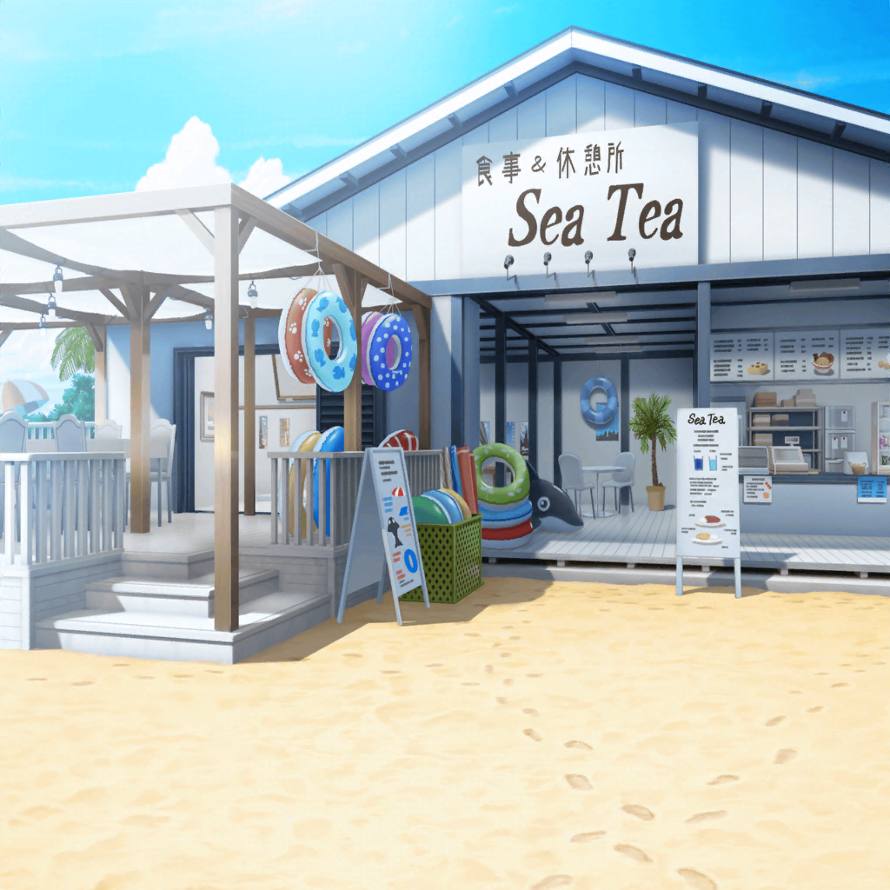

海の家
ひまり
海の家に、到着～！
何を頼もうかなあ〜っと……
彩
いらっしゃいませ～！ 特別コラボカフェへようこそ～！
限定ドリンクやゲームをモチーフとした色んなメニューが
たっくさんあるから、みんな楽しんでいってね♪
ひまり
……え、ええぇっ！？ 彩さん！？
彩
あれっ、ひまりちゃん！
それに……リサちゃんとあこちゃん、
燐子ちゃんまで！ なになに、みんなどうしたの？
リサ
彩こそ、ここで何してるの？
……そのネームプレート……『１日店長』？
彩
えへへ、そうなの！
今回のコラボカフェで、海の家の１日店長を任されました、
丸山彩でーっす！ みんな、よろしくっ！
あこ
すごい、あや先輩が店長さんなんだっ！
だから、こんなにたーっくさんお客さん来てるんだねっ！
彩
そ、そうなのかな？ えへへ、だったら嬉しいな……
でも、コラボしてるゲームの人気もすっごいみたいだよ。
ほら、見て。お客さん、みーんな展示の写真撮ってるでしょ？
あこ
あっ！ このゲーム、あことりんりんもやってる！
りんりんとあこはリリースの時から
ずっと一緒にパーティ組んでてねっ、それでねっ！
店長
彩ちゃん、彩ちゃーん！
ごめん、またホール手伝ってほしいんだけど……
彩
あっ、店長！
お疲れさまでーす！
ひまり
店長……？
あ、ホントの店長さんか！
店長
ん？ 君達……彩ちゃんのお友達？
ひまり
はい、そうですけど……
店長
ああ、助かった！
ごめん、いきなりで本当に悪いんだけど、
お店をちょっとだけ手伝ってもらえないかな？
リサ
あ、アタシ達がですか！？
店長
うん、お願いできないかな？
彩ちゃんのおかげで見ての通りの大繁盛で、
ちょっと人手が足りなくなっちゃって……
リサ
アタシ達にできることがあるなら、
お手伝いしたいですけど……でも……
店長
そんなに難しい仕事じゃないから！
基本的にはスタッフを手伝ってもらえればいいから……
お願いっ！ 頼むよ〜！
リサ
……わかりました。任せてください！
ここまで頼まれたら、断れないよね♪
ひまり
はい、私も手伝います！
ファーストフードでも経験あるし、
ホールなら私にもできると思います！
あこ
あこも手伝う！
お店で働くのなんて初めてだから、楽しそう！
りんりん、一緒にやろー！
燐子
……え……あ……わたしは……
う……うん…………
店長
ありがとう、みんな！
助かるよ！
それじゃあ、お願いします！
一同
はーい！
燐子
（ど……どうしよう……
わ……わたし…………）
ひまり
あこちゃんと私が、ホールのお手伝いだね！
彩さん、よろしくお願いします！
あこ
ねえねえ、あや先輩。
ホール？ って、どんなことしたらいいの？
彩
基本的には、お客さんから注文を取って、
料理を運べば大丈夫だよ
あこ
注文を取って、料理を運ぶ……うん、わかった！
あこ、やってみるっ！
ひまり
あこちゃん、一緒にがんばろうね！
……あ、お客さんが呼んでる！ 私、注文取ってくるね！
彩
ひまりちゃん、よろしく～！
よしっ。それじゃあ、あこちゃん。まずはこの焼きそばを、
あそこの４人グループに持っていこっか！
あこ
はーい！ 行ってきまーす！
リサ
よし、キッチンはアタシにまっかせなさい☆
えーっと、次に入ってる注文は……
ラーメンが２つと、焼きそば、カレーだね！
リサ
カレーはちょっと温めれば大丈夫そうかな。
麺を茹でる間に焼きそばの具を炒めて、それから……
ひまり
リサ先輩、焼きそばもう３つ追加です！
リサ
オッケー、了解！
な～んかアタシ……ノッてきちゃった！
彩
リサちゃん、カッコいい～！
手際もすっごくいいね！
リサ
あはは、そんなことないよ～。
ただ、趣味で料理をたま～につくってるから、
少しだけ慣れてるだけだよ♪
リサ
それよりドリンクは大丈夫？
さっきいっぱい注文入ってたみたいだけど
彩
そうなの～！
コラボドリンクが大人気で、たくさん注文きちゃうんだ
リサ
それじゃあ、この焼きそばが終わったら、
アタシ、ちょっとドリンクの方も見てくるね☆
料理の注文は落ち着いてきたみたいだし
彩
ほんと！？ ありがとう！
お願いします！
リサ
りょーかい！
さてさて、ドリンクは……
あのカウンターでつくってる……って、あれ？
燐子
（ど……どうしよう……わたし……何をしたら……
アルバイトとかも……したこと……ないし……）
リサ
り～んこ♪
ちょっと手伝ってもらってもいい？
燐子
あ……い……今井、さん……
リサ
今ね、ドリンクの注文が結構入っちゃってるらしいんだ。
だから作るのを、ね！
燐子、手伝ってあげてくれない？
燐子
え……ドリンク、を……つくるん……ですか……？
リサ
そうそう！
なんかゲームのコラボドリンクが大人気なんだって！
燐子
ゲームの、コラボドリンク……わ……わかりました……
でも……わたしに……できるんでしょうか……？
リサ
大丈夫大丈夫♪ 燐子ならできるよ。
アタシも手伝うしさ
リサ
それじゃあ、早速、最初に入ってる注文のドリンクを……
え？ ど、ドリアートの、涙？？ な、何それ、どれ……？
燐子
あ……それ、は……これ……だと思います……
この……メニューの……上から３番目……
リサ
わ、ホントだ！ このメロンソーダのやつだ！
すごいね燐子。なんですぐ見つけられたの？
燐子
……ドリアードの涙って……あの……ゲームだと、
緑色の……回復、アイテム……だから……
リサ
へぇ、そうなんだ！
ていうか燐子、めっちゃ頼りになるじゃん！
よし、それじゃあ、次！ このマリカスの炎って言うのは……
燐子
マリカスの炎なら……